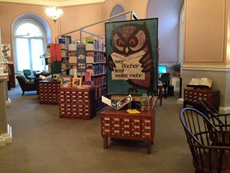
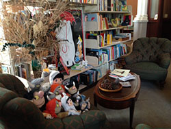
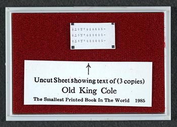
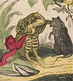
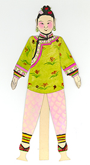
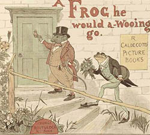

Notice: All Library of Congress research centers are closed to the public (including researchers and others with reader identification cards) until further notice to reduce the risk of transmitting COVID-19 coronavirus. All Library-sponsored public programs are also postponed or cancelled until further notice. Online resources and reference services, such as Ask a Librarian, will continue to be available during this time. For more information, see: www.loc.gov/coronavirus.
|
The Children's Literature Center is a part of the Rare Book and Special Collections Division Digitized Children's Literature Children's Books Online from the Rare Book and Special Collection's Division Children's Books Online from the General Collections Email the Children's Literature Center Blog Posts About Rare Children's Books Hans Christian Andersen: A Billedbog to a Boy More Blog Posts About Children's Books Exhibitions |

The Children's Literature Center assists users in gaining access to all children's materials dispersed throughout the Library. The Library holds between 500,000 and 600,000 children's books and periodicals including maps, visual and audio media and secondary material.
 

|
Location: 101 Independence Ave. SE Thomas Jefferson Building, LJ 129 Washington, DC 20540-4620 Telephone: (202) 707-5535 Map showing location
Hours: Ask
a Librarian Featured Item
Pinterest Boards with Rare Children's Book Illustrations  |
Inquiries can be made in person, by letter, phone, or online at Ask a Librarian. Researchers needing assistance are encouraged to make an appointment before their visit. For group visits and book presentations, please call at (202) 707-5535. In the Center's Reading Room, a children's literature specialist offers research assistance, locates materials, and orients researchers to the Library's extensive resources. The Center houses a reference and a showcase collection of illustrated children's books, including the world’s smallest children’s book. | ||
{kind=link}
| The
Library of Congress >> Especially
for Researchers >> Research
Centers August 26, 2020 |
Legal | External Link Disclaimer |
Contact
Us |